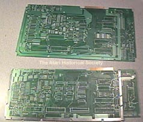

The Atari SECAM 600/800XL
Systems
Atari had worked on making sure its line of computer systems could work
worldwide, so they designed a seperate set of XL computers specifically
for use with French SECAM video standards, here are the 2 original prototype
motherboards which are bare, the SECAM version of the 600XL was nicknamed
Pauline. The NTSC version of the 600XL was nicknamed "SHIRLEY"
at the WCI New York Atari Labs and "SURELY" in the Sunnyvale, CA. home
computer division.
